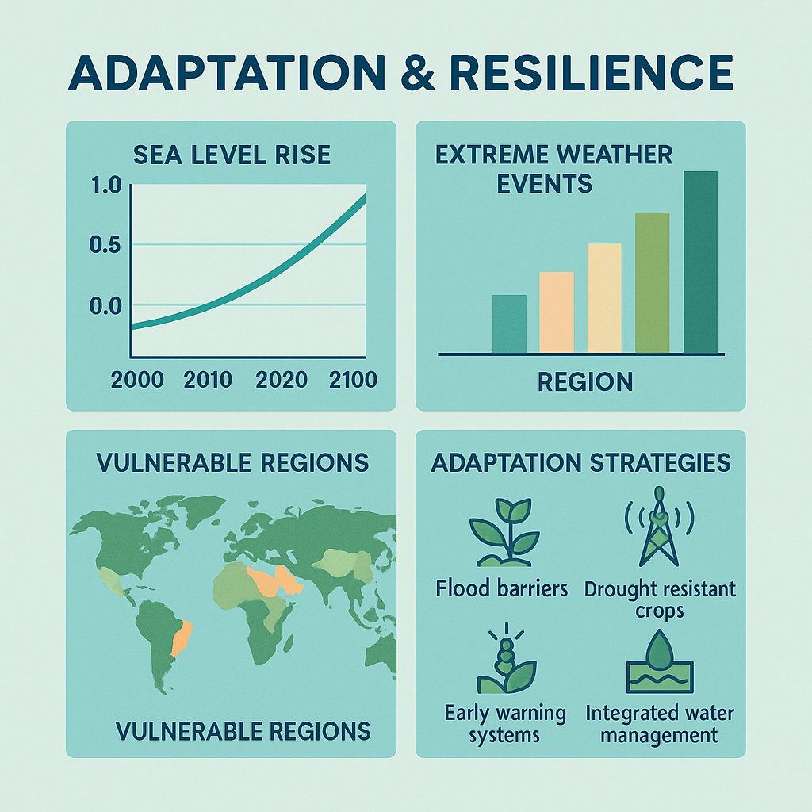
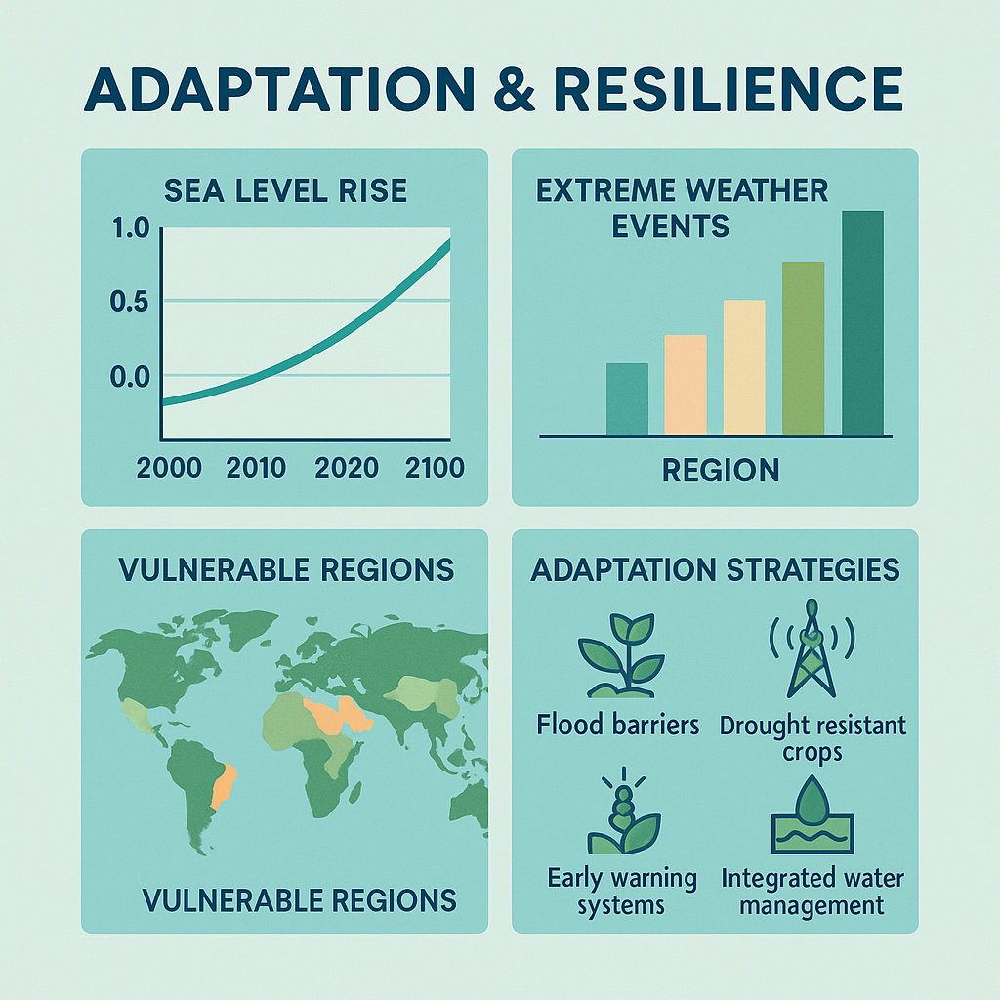

Sürdürülebilir Şehirler için Stratejiler
Yapılı Çevrede sürdürülebilir enerji çözümlerini analiz ediyoruz.
Vizyonumuz; yapılı çevrede enerji renovasyonları gerçekleştirerek mevcut yapı stokunu sürdürülebilir hale getirmek, enerji tüketimini minimize etmek ve yaşam kalitesini artırmak üzere yenilikçi ve bütüncül çözümler geliştirmektir.
Enerji Verimli Binalar Neden Kritik?
Uluslararası Enerji Ajansı'nın (IEA) raporlarına göre, küresel enerji ilişkili karbon emisyonlarının yaklaşık %38’i doğrudan binaların enerji tüketiminden kaynaklanmaktadır. Ayrıca, yapı malzemelerinin üretimi ve tedarik süreçleri bu emisyonlara yaklaşık %10 ek katkı sağlamaktadır (IEA, 2024).
Mevcut bina stokunun yaklaşık %75’i, enerji performansı açısından düşük standartlara sahiptir. Bu yapılar, küresel ölçekte her yıl yaklaşık 520 milyon ton karbondioksit (MtCO₂) salınımına yol açmaktadır. Bu durumun iyileştirilmesi, hem çevresel sürdürülebilirlik hem de enerji ekonomisi açısından kritik önem taşımaktadır.
Yatırımları Hızlandırmak Kaçınılmaz
2030 yılına kadar küresel çapta yapılması öngörülen enerji dönüşüm yatırımlarının yıllık 250–300 milyar USD civarında olması gerektiği hesaplanmaktadır (IEA, 2024). Bu yatırım miktarının sağlanması, mevcut yapıların yenilenmesi ve yeni yapıların sürdürülebilir standartlara uygun inşası için gerekli altyapıyı oluşturacaktır.

 


Ne Yapıyoruz?

Yalıtım Analizleri
Detaylı enerji analizleri.
Yalıtım Analizleri
Yapı bileşenlerinin ısı geçirgenliğini analiz ederek, enerji kayıplarını azaltmak ve optimum yalıtım kalınlıklarını belirlemek için maliyet–fayda değerlendirmeleri yapılır.

Isı Pompası Kurulumu
Performans iyileştirme projeleri.
Isı Pompası Kurulumu
Isı pompası sistemlerinin enerji performansı, COP değerleri ve yıllık işletme maliyetleri detaylı şekilde modellenerek, enerji tüketiminin azaltılması hedeflenir.

Güneş Paneli Entegrasyonu
Güneş enerjisi entegrasyonu.
Güneş Paneli Entegrasyonu
Binaların çatı ve cephelerine güneş panellerinin entegrasyonu için enerji üretim potansiyeli ve yatırım geri dönüş süreleri simülasyonlarla hesaplanır.

Şarj Ünitesi Optimizasyonu
U-değer hesaplamaları.
Şarj Ünitesi Optimizasyonu
Elektrikli araç şarj ünitelerinin binalardaki enerji altyapısına entegrasyonu incelenerek, enerji yük dağılımı ve kapasite optimizasyonları yapılır.

Depolama Çözümleri
Verimlilik optimizasyonu.
Depolama Çözümleri
Enerji depolama sistemlerinin etkinliği analiz edilerek, pil sistemlerinin ekonomik performansı, uzun vadeli güvenilirliği ve çevresel faydaları değerlendirilir.

Kent Mobilyası Tasarımları
Kentsel mekanlar için ergonomik ve sürdürülebilir mobilya tasarımına yönelik malzeme, yerleşim ve işlevsellik optimizasyonu yapılır.
Kent Mobilyası Tasarımları
Dayanıklılık, çevresel etki ve kullanıcı konforu gözetilerek şehir mobilyalarının tüm yaşam döngüsü boyunca performans değerlendirmeleri gerçekleştirilir.

Energy Use
Yıllık enerji tüketimi.
Energy Use
Yapıların yıllık enerji tüketimi kWh/m² olarak hesaplanarak enerji performansının bina tipleri ve kullanım senaryoları bazında detaylı değerlendirilmesi yapılır.

IOD
Aşırı Isınma Riski
IOD
İç ve dış sıcaklık farklarının analizi ile bina kullanıcılarının termal konforu ve enerji ihtiyacı modellenerek performans değerlendirmeleri gerçekleştirilir.

Yatırım Maliyetleri
CAPEX & OPEX detayları.
Yatırım Maliyetleri
Enerji verimliliği projelerinin başlangıç (CAPEX) ve operasyonel (OPEX) yatırım maliyetleri analiz edilerek ekonomik sürdürülebilirlik değerlendirilir.

Emisyon Azaltım Maliyetleri
$/tCO₂ abatement.
Emisyon Azaltım Maliyetleri
Karbon emisyonlarını azaltmak için gerekli maliyetler $/tCO₂ olarak hesaplanarak, çeşitli enerji senaryolarının maliyet etkinliği karşılaştırılır.

İşletme Kaynaklı Karbon
Ton/yıl bazında.
İşletme Kaynaklı Karbon
Yapıların işletme aşamasındaki karbon ayak izi ton CO₂/yıl olarak hesaplanarak enerji performansının çevresel etkisi değerlendirilir.

Gömülü Karbon
kgCO₂e/m² hesaplaması.
Gömülü Karbon
Yapı malzemelerinin üretiminden kaynaklanan karbon salınımı kgCO₂e/m² bazında hesaplanarak, sürdürülebilir malzeme seçimleri değerlendirilir.

UP 2030
Kentsel Bina Enerji Modellemeleri,Enerji Renovasyon Senaryoları ve Metrik Panelleri
Visit Site
1004
Enerji Renovasyon Senaryoları Karşılaştırması ve Bölge Bazlı Karar Destek Sağlama Aracı
Visit SiteExplore Our Dashboards
Heating Energy Use

Cooling Energy Use
ROI
Abatement Cost

CO₂ Reduction

IOD
Our Team
Prof. Dr. İpek Gürsel Dino
Academician, Architecture, Urban Energy Modeling

Prof. Dr. Sinan Kalkan
Academician, Computer Engineering
Prof. Dr. Murat Göl
Academician, Electric and Electronic Engineering
Prof. Dr. Onur Taylan
Academician, Electric and Electronic Engineering
İlkim Canlı
PhD Candidate, Architecture and Sustainability
Cihat İlkbahar
Researcher, Architecture and Sustainability
Fatma Ece Gürsoy
Researcher, Architecture and Sustainability

Ataberk Yılmaz
Researcher ,Master Student, Architecture

Melis Ceren Özdemir
Master Student, Architecture
Sena Nur Cabadağ
Master Student, Architecture
Dican Deniz Köse
Master Student, Architecture
Our team is a multidisciplinary family of architects, engineers, and sustainability experts—comprising faculty, PhD and master’s students—focused on urban-scale energy modeling, performance analysis, and innovation.
Publications
- Canli, I., Halacli, E. G., Ucar, S., Iseri, O. K., Yavuz, F., Guney, D., Gursoy, F. E., & Dino, I. G. (2024). Machine learning-based prediction of long-term energy consumption and overheating under climate change impacts using urban building energy modeling. Sustainable Cities and Society, 106, 106500.
- Akyol, I. C., Karadag, Y. M., Ucar, S., Talaz, I., Gursoy, F. E., Dino, I. G., & Kalkan, S. (2025). Transfer learning and parameter-efficient fine-tuning for heating energy consumption prediction using urban building energy models (UBEM). Advanced Engineering Informatics, 68(Part A), 103576.
- Iseri, O. K., Duran, A., Canli, I., Akgül, Ç. M., Kalkan, S., & Dino, I. G. (2024). A method for zone-level urban building energy modeling in data-scarce built environments. Energy and Buildings, 337, 115620.
- Han, M., Canli, I., Shah, J., Zhang, X., Dino, I. G., & Kalkan, S. (2024). Perspectives of machine learning and natural language processing on characterizing positive energy districts. Buildings, 14(2), 371.
- Halacli, E. G., Canli, I., Iseri, O. K., Yavuz, F., Akgül, Ç. M., Kalkan, S., & Dino, I. G. (2023). A novel graph neural network for zone-level urban-scale building energy use estimation. In Proceedings of the 10th ACM International Conference on Systems for Energy-Efficient Built Environments (pp. 169-176).
- Canli, I., Iseri, O. K., & Dino, I. G. (2023). Comparison of different data-driven models on prediction of useful daylight illuminance (UDI). In International Symposium of Architecture, Technology and Innovation.
- Akyol, I. C., Karadag, Y. M., Ucar, S., Talaz, I., Gursoy, F. E., Dino, I. G. & Kalkan, S. (2024). Transfer Learning–Based Prediction of Heating Energy Consumption Using Urban Building Energy Models (UBEM). In 31st International Workshop on Intelligent Computing in Engineering.